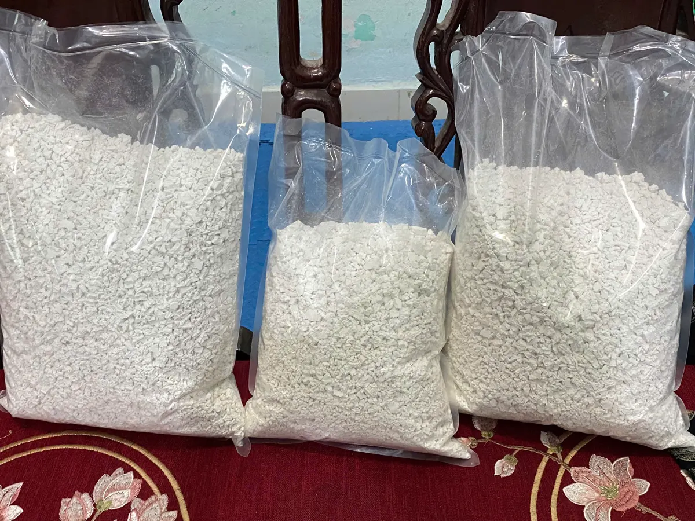
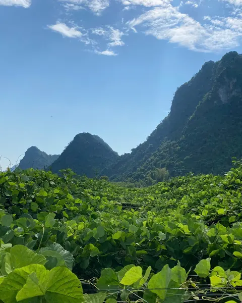
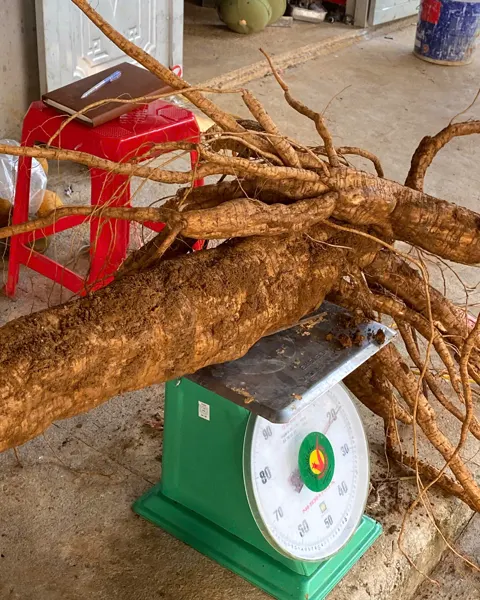
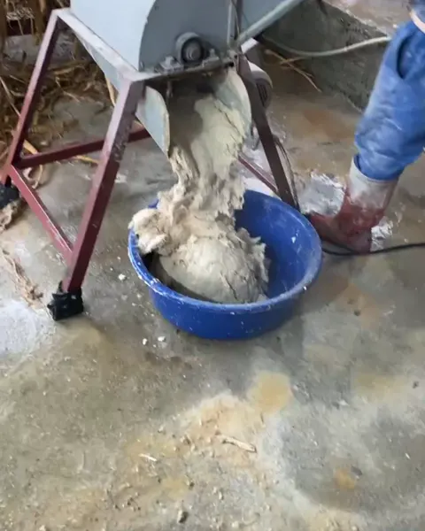
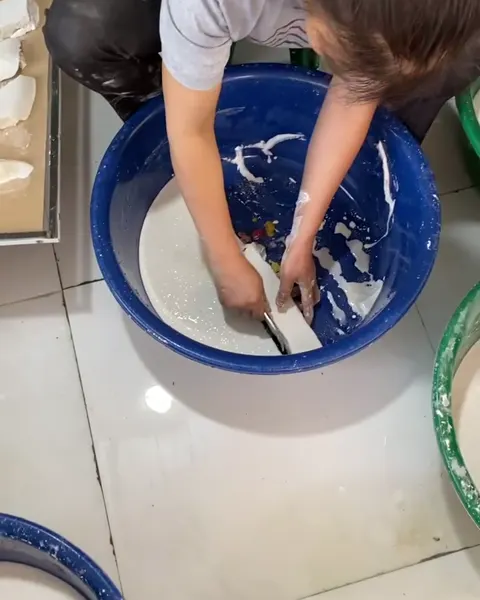
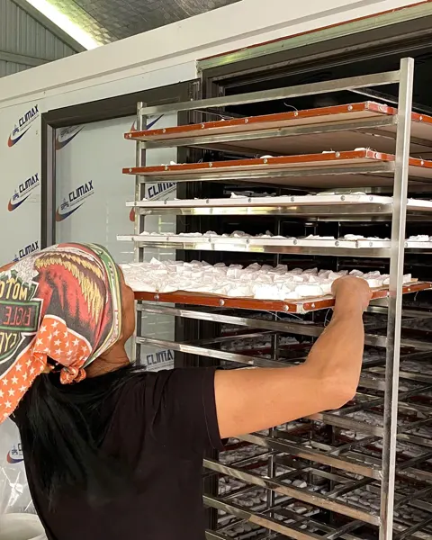
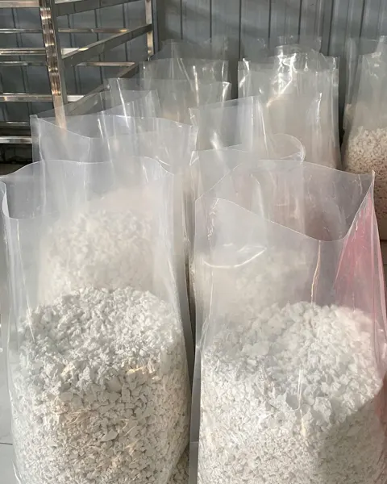
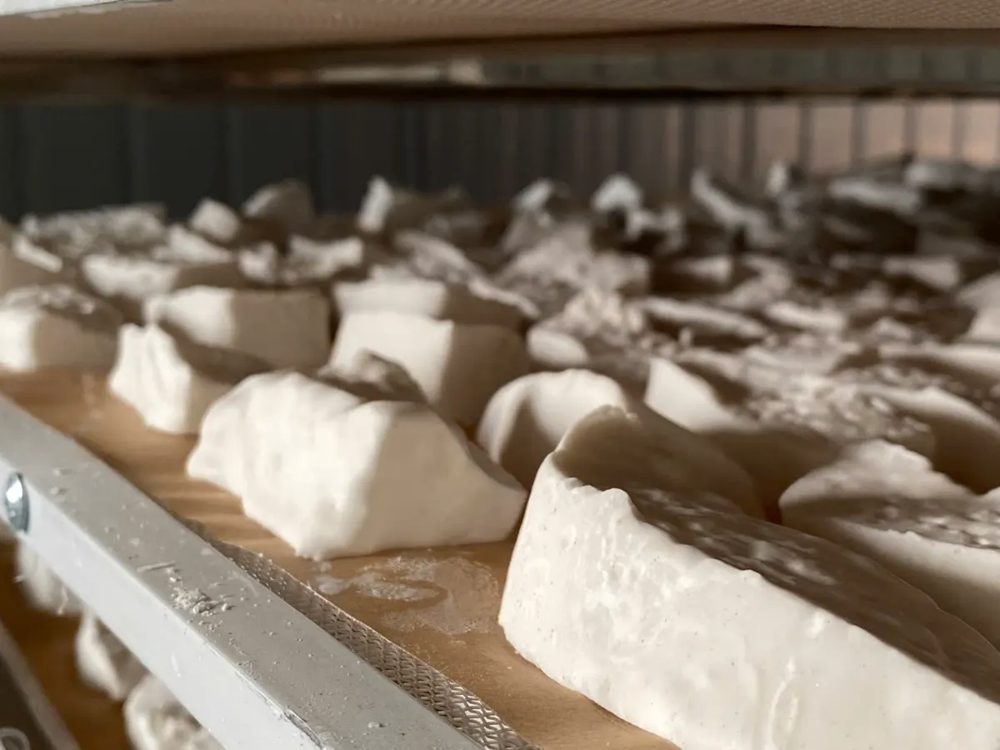

Trang chủ / Tinh Bột Sắn Dây

Tinh Bột Sắn Dây
Từ củ sắn dây trồng giữa núi đá vôi Bắc Sơn, lọc nhiều lượt, sấy lò kiểm soát nhiệt. Bột trắng tự nhiên, không tẩy trắng, không phụ gia. Thành phần: 100% tinh bột sắn dây.
- Túi 0,5kgDùng thử, làm quà nhỏ80.000đ
- Túi 1kgGia đình dùng thường xuyên · lợi hơn155.000đ
- Túi 5kgQuán chè, nhà hàng, mua chungNhắn báo giá
- Túi 10kgMua sỉ, đại lýNhắn báo giá
- Bảo quản nơi khô ráo, thoáng mát, tránh ánh nắng trực tiếp
- Giao toàn quốc 2–5 ngày, phí ship báo trước khi gửi
- Đổi mới hoặc hoàn tiền nếu hư hỏng khi giao
Một túi bột, nhiều món quen
Chưa biết pha sao cho không vón cục? Xem hướng dẫn cách dùng.
Pha uống thanh mát
Pha nước sắn dây ngày nắng, món giải nhiệt quen thuộc theo kinh nghiệm dân gian.
Nấu chè, tráng miệng
Chè sắn dây hạt sen, chè bưởi, thạch: bột sánh mịn, trong veo khi chín.
Làm bánh, nấu ăn
Tạo độ sánh cho súp, nước sốt; làm bánh mềm, dẻo.
Pha với sữa, đồ uống
Kết hợp sữa, nước cốt chanh, mật ong tuỳ khẩu vị.
Tinh bột sắn dây là thực phẩm, không thay thế thuốc chữa bệnh.
6 bước, làm thật, không đi tắt
Toàn bộ ảnh chụp tại nương và xưởng của hợp tác xã ở xã Vũ Lăng.
- Bước 1

Trồng giữa núi đá
Dây leo phủ kín giàn, củ lớn dần dưới đất.
- Bước 2

Đào cả gốc củ
Củ to chắc, đưa về xưởng trong ngày.
- Bước 3

Rửa sạch, nghiền
Rửa hết đất cát, nghiền nát, ép lấy nước bột.
- Bước 4

Lọc & lắng nhiều lượt
Khuấy, để lắng, thay nước, lọc lại đến khi bột trắng trong.
- Bước 5

Sấy lò nhiều tầng
Nhiệt độ cài sẵn, khô đều, không phụ thuộc nắng mưa.
- Bước 6

Ra lò là đóng túi
Giữ trọn màu trắng tự nhiên.
Xem tận mắt từ nương đến xưởng
Video quay thật, có thuyết minh tiếng Việt và phụ đề tiếng Anh.
Cả hành trình: đào củ, nghiền lọc, sấy khô
Củ tươi to cỡ nào, trước khi thành tinh bột
Bên trong lò sấy, chi tiết từng bước
Một buổi sáng trên nương, giữa núi đá vôi

Giao tận nơi, lỗi là đổi
- Giao toàn quốc. Qua đơn vị vận chuyển, thường 2–5 ngày tuỳ khu vực. Phí ship báo trước khi bạn xác nhận đơn.
- Đổi mới hoặc hoàn tiền nếu hàng hư hỏng do vận chuyển, giao sai loại/sai số lượng hoặc lỗi sản xuất: quay video lúc mở hàng, báo Zalo trong 24 giờ.
- Xác nhận trước khi gửi. Nhà mình gọi/nhắn xác nhận đơn và cách thanh toán phù hợp rồi mới đóng hàng.
- Mua sỉ: túi 5kg, 10kg. Quán chè, tiệm bánh, cửa hàng đặc sản, đối tác xuất khẩu: nhắn để nhận báo giá sỉ.
Tinh Bột Sắn Dây bảo quản được bao lâu?
Đã sấy khô hoàn toàn nên bảo quản được lâu. Để nơi khô ráo, thoáng mát, tránh ẩm là dùng tốt. Bán quanh năm, luôn có hàng mới, đặt là giao ngay.
Sản phẩm có chứng nhận gì?
Giấy tờ của Tinh Bột Sắn Dây sẽ được công khai tại đây khi hợp tác xã hoàn tất hồ sơ. Nhà mình chỉ ghi những gì có giấy thật. Không hoá chất, không tẩy trắng là cam kết của hợp tác xã.
Ở xa (ngoại tỉnh, vùng núi) có giao được không?
Giao hàng toàn quốc qua đơn vị vận chuyển, thường 2–5 ngày tuỳ khu vực (nội thành nhanh hơn, vùng xa lâu hơn). Phí ship theo bảng giá đơn vị vận chuyển, báo trước khi bạn xác nhận đặt hàng.
Hàng lỗi hoặc giao sai thì đổi trả thế nào?
Vì là thực phẩm nên không nhận đổi trả hàng đã mở/đã dùng. Được đổi hàng mới hoặc hoàn tiền nếu hàng hư hỏng do vận chuyển, giao sai loại/sai số lượng, hoặc lỗi từ khâu sản xuất: quay video lúc mở hàng và báo Zalo trong 24 giờ kể từ khi nhận hàng.
Mua sỉ/số lượng lớn được không?
Có. Hợp tác xã nhận đặt sỉ (túi 5kg, 10kg) và trao đổi xuất khẩu. Nhắn Zalo để trao đổi số lượng, giá, cách đóng gói phù hợp.
Đặt hôm nay, giao tận nhà
Túi 0,5kg 80.000đ · túi 1kg 155.000đ. Nhắn Zalo hoặc gọi, giao tận nơi trên toàn quốc. Muốn xem cả Cam Đường Canh?